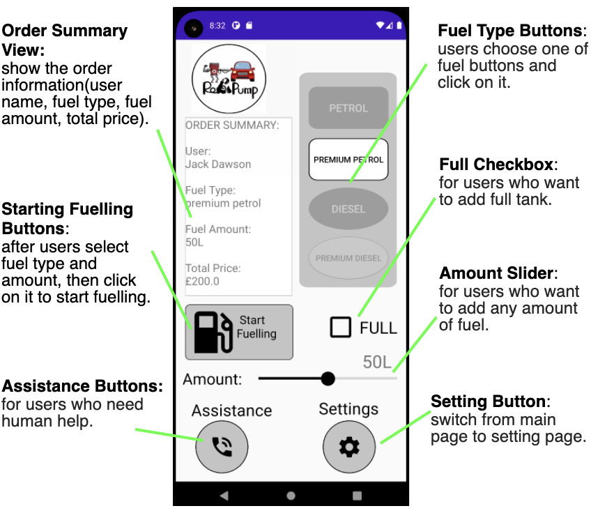
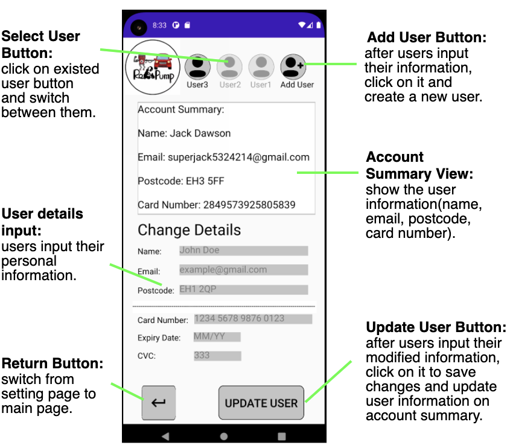

How does our System Work?
Summarise what your system does, its target market and uses cases here
Table of Contents
- Hardware
- A
- B
- C
- Software
- App
- Vision
- How It All Fits Together
Hardware
contents needed!!!
Software
1.App
Our system's Android app is designed to let users start the robot which will fuel their car at the gas station. When users arrive at the gas pump, they can activate our gas station assistant robot to fuel up their car from inside of their vehicle via our Robopump app.
The layout of the app consists of six fragments: Main Page, Setting Page, Warning Page, Fuelling Page, Complete Page and Assistance Page.
Main Page Setting Page Warning Page
Fueling Page Complete Page Assistance Page

Functionality of Main Page

Functionality of Setting Page
To begin the development of our app, we focused on the UI design. For the UI mock-up design tool, we used an application called Figma,
which allowed us to simulate button functionality.
For our app, which we decided to use Android, as it's more popular than iOS and it's easier to work with. Since we created an Android app, we used Android Studio as our development tool as it is free and widely used.
The app was coded in Java, as it is a widely supported and is the official language for Android development. Also, all members in software team
were experienced with it.
After we converted the UI design from Figma into Android Studio, we mainly focus on implementing the necessary functionalities (See previous
pictures in Functionality section). We also use SharedPreference clss to store the state of views so that every view does not
disappear when switching between pages or closing the app.
Next, we implement a database to store users' information. As an abstraction for simplicity, we stored the data as a CSV file on
the device’s internal storage. As an addi- tional benefit, this meant that only our app could access the file, while simultaneously
we avoided the need to give the app extra permissions for storage access which would have been required when using external storage.
Once the file was created and stored, methods for reading, writing and updating the files were created, which provide infrastructure
for any future functionalities such as storing user data on server infrastructure instead of locally.
Then, we start working on establishing communication between app and the robot in webots, and we finally decide to do this through a
web server, as it is more reliable and feasible than other methods, such as a Bluetooth connection. Since our project is fully simulated,
we adapted a Java script to create a local web server, which can be started via a terminal command. The app and robot will act as clients
to this server and will be able to send and receive requests to and from the server. In the future, this server could be run remotely
rather than locally.
Finally, for the app we made a new class called AppClient, which uses Java’s Socket class to connect to a server and then handle the sending and
receiving of requests from the server. To integrate this client class into the functionality of the app, we made it so that, upon the
user confirming they want to start fuelling with the OK button, the App sends a request to the server containing the type and amount of fuel.
This is then received by the robot in Webots which triggers the robot to begin the fuelling of the car.
From the Webots perspective we used the same method for connecting to the server except it was coded in Python as opposed to Java like in the app.
The robot will first connect to the server and then start listening for requests which will be forwarded from the app by the server. Once the robot
has finished fuelling the car it can then send a success message to the app though the server.
- When users open the App for the first time, they start on the setting page and need to create a new user to access the main page for further operations.
- Users input their personal information (with relevant error messages popping up if any input is invalid) and click on Add User button, a new user will be created.
- If users want to change information details of any created users, they can click on that specific user button first and then re-input new information, followed by clicking on the Update User button. The currently selected users information will be shown on account summary.
- Users click on Return button to access main page.
- Users click on one of Fuel Type buttons and select fuel amount using either “Full” checkbox or amount slider (depends on how much gas they want), then click on Start Fuelling button to start. A prompt window will pop up for them to confirm everything is ready.
- After users confirm fuelling, they stay on fuelling page and can see a dynamic 'live' fuel and price counter, much like one found on a real fuel pump. During this process, they can click on the Stop button at any time to stop fueling - although this should only occur during emergencies.
- When fueling is done, users are shown a success page confirming that fuelling has been completed and can then click on the Finish button to return main page. Optionally, they could select the checkbox to receive an email receipt.
- If users have any problems, they can click on Assistance button to ask for human help.
A video to introduce how to use our App
2.vision
add contents!!!!
How It All Fits Together
contents needed!!!
Methods
Explain the key methods of how you got your system to work
System Diagrams
You should include images (where available) which illustrate the methods you used, how the system works etc. This can include system diagrams, images of your system in certain states etc.